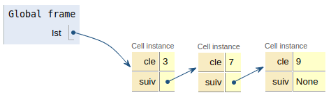

Le TAD liste - Exemples d'implémentation⚓︎
TAD pour Type Abstrait de Données: description d’un ensemble organisé d’objets et des opérations de manipulation sur cet ensemble (Jean Berstel dans Éléments d'algorithmique page 38).
Repère historique⚓︎
John McCarthy, prix Turing en 1971, créa en 1958 le langage Lisp qui signifie LISt Processor. Les listes constituent le fondement de Lisp.
Introduction⚓︎
Définitions
Une liste est une collection finie d’éléments qui se suivent. C’est une structure de données linéaire. Une liste qui ne contient aucun élément est une liste vide.
Les doublons sont possibles. On formalisera cette définition dans un premier temps, avant de donner des implémentations possibles des opérations fondamentales sur les listes.
Exemples
- liste des gaz nobles dans l'ordre de leur masse atomique: [hélium, néon, argon, krypton, xénon, radon];
- liste des nombres de jour des mois d'une année non bissextile: [31, 28, 31, 30, 31, 30, 31, 31, 30, 31, 30, 31]
Comment formaliser une liste ?⚓︎
Supposons une liste composée de trois éléments, ici des entiers: \(\ell = [3, 7, 9]\). Une façon de décrire cette liste consiste à voir \(\ell\) comme l'association:
- d'un premier élément 3 qu’on nomme élément de tête;
- et d'une liste \(\ell_1 = [7, 9]\) des éléments qui suivent (liste qu’on nomme souvent reste).
Cette description de \(\ell\) est aussi valable pour \(\ell_1\) qui est constituée:
- d’un élément de tête : 7,
- et d’un reste : \(\ell_2 = [9]\).
De la même façon que précédemment, la liste \(\ell_2\) est constituée:
- d’un élément de tête : 9,
- et d’un reste : \(\ell_3 = []\).
La liste \(\ell_3\) étant vide, elle ne possède pas d’élement de tête, et ne peut donc pas être décomposée comme nous venons de le faire à trois reprises.
Définition
Une liste \(\ell\) d'éléments d'un ensemble \(E\), est:
- soit une liste vide;
- soit un couple \((x,L)\) formé d'un élément de tête \(x\in E\) et d'une liste \(L\) d'éléments de \(E\):
Cette définition est récursive.
Opérations sur les listes⚓︎
Parmi les opérations fondamentales sur les listes, on peut citer celles mises en évidence ci-dessous.
Opérations
- création d'une liste vide;
- construction d'une liste à partir d'un élément et d'une autre liste;
- test d'une liste afin de savoir si elle est vide ou pas;
- pour une liste non vide, récupération de la tête et du reste (on dit aussi queue).
Structures concrètes⚓︎
Une liste peut être implémentée de différentes façons. On verra ici rapidement une réalisation à base de couples, puis, de manière plus détaillée, une implémentation à base d'éléments chaînés entre eux.
Réalisation avec des couples⚓︎
def listepy-undvide():bksl-nl return Nonebksl-nlbksl-nldef cons(e, l):bksl-nl """ Construit une liste à partir d'un élément e et d'une liste l"""bksl-nl return (e, l)bksl-nlbksl-nldef tete(l):bksl-nl """ Renvoie l'élément de tête de l"""bksl-nl assert l is not None, "tete: erreur liste vide"bksl-nl return l[0]bksl-nlbksl-nldef queue(l):bksl-nl """ Renvoie une liste correspondant à la queue de l"""bksl-nl assert l is not None, "queue: erreur liste vide"bksl-nl return l[1]bksl-nlbksl-nldef estpy-undvide(l):bksl-nl return l is Nonebksl-nlbksl-nl# TESTSbksl-nlpremiers = cons(2, cons(3, cons(5, cons(7, listepy-undvide()))))bksl-nlprint(tete(premiers))bksl-nlprint(queue(premiers))bksl-nlprint(estpy-undvide(premiers))bksl-nlbksl-nl
A
Z
Insertion
L'insertion d'un élément à l'intérieur de la liste, pas très pratique, est laissée en guise d'exercice.
Réalisation avec des listes chaînées⚓︎
Dans cette réalisation concrète d'une liste, les éléments sont chaînés entre eux.

Chaque élément, qu'on nomme habituellement cellule ou maillon en français (Node en anglais), contient une valeur ou clé et une référence (qui peut être vue comme l'adresse mémoire) vers la cellule suivante.
On va représenter une cellule par une classe Cell en python.
1 2 3 4 5 6 | |
La construction d'une liste ressemble beaucoup à la réalisation par couple. La liste schématisée ci-dessus est obtenue par:
1 | |
On remarque que la liste vide est obtenue avec None. La tête et la queue d'une liste chaînée peuvent être obtenues avec les fonctions suivantes:
1 2 3 4 5 6 7 8 9 | |
class Cell:bksl-nl """ Une classe pour décrire une cellule (maillon) d'une liste chainée"""bksl-nlbksl-nl def py-undpy-undinitpy-undpy-und(self, v, s):bksl-nl self.cle = vbksl-nl self.suiv = sbksl-nl bksl-nldef estpy-undvide(l):bksl-nl return l is Nonebksl-nl bksl-nldef tete(l):bksl-nl """ Renvoie l'élément de tête de l"""bksl-nl assert not estpy-undvide(l), "tete: erreur liste vide"bksl-nl return l.clebksl-nlbksl-nldef queue(l):bksl-nl """ Renvoie une liste correspondant à la queue de l"""bksl-nl assert not estpy-undvide(l), "queue: erreur liste vide"bksl-nl return l.suivbksl-nl bksl-nllst = Cell(3, Cell(7, Cell(9, None)))bksl-nlprint(estpy-undvide(lst))bksl-nlprint(tete(lst))bksl-nlprint(queue(lst))bksl-nlprint(tete(queue(lst)))bksl-nlbksl-nl
A
Z
Autres opérations sur les listes⚓︎
Longueur d'une liste⚓︎
Une première possibilité est d'écrire une fonction récursive:
- si la liste est vide, sa longueur est nulle;
- sinon sa longueur vaut 1 plus la longueur de la liste suivante (rappel: une liste est un élément suivi d'une autre liste, la queue).
1 2 3 4 5 6 7 | |
1 2 | |
1 2 | |
Seconde possibilité:
À faire
Écrire une version itérative de la fonction longueur.
1 2 3 4 5 | |
Le coût en temps est proportionnel à la taille \(n\) de la liste (complexité temporelle en \(\mathcal{O}(n)\)).
Accéder au n-ième élément⚓︎
On souhaite accéder à la clé (avoir la valeur) de l'élément d'index \(k\) d'une liste lst avec une fonction kieme(k, lst). On peut procèder encore une fois de manière récursive:
- si \(k=0\), on renvoie simplement la tête de
lst; - sinon, on renvoie la clé de l'élément d'index \((k-1)\) de la queue de
lst.
Évidemment accéder à l'élément d'index \(k\) n'est pas défini pour une liste vide.
À faire
Écrire la fonction
1 2 3 4 5 6 7 8 | |
Le pire des cas se produit pour un accès à la clé de la dernière cellule. Dans ce cas, le coût en temps est proportionnel à la taille \(n\) de la liste (complexité temporelle en \(\mathcal{O}(n)\)).
Insérer ou supprimer un élément⚓︎
À faire
Voir exercice 1 de la fiche d'exercices